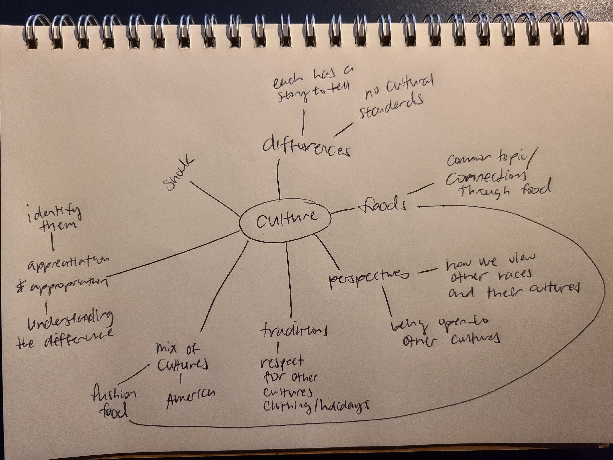
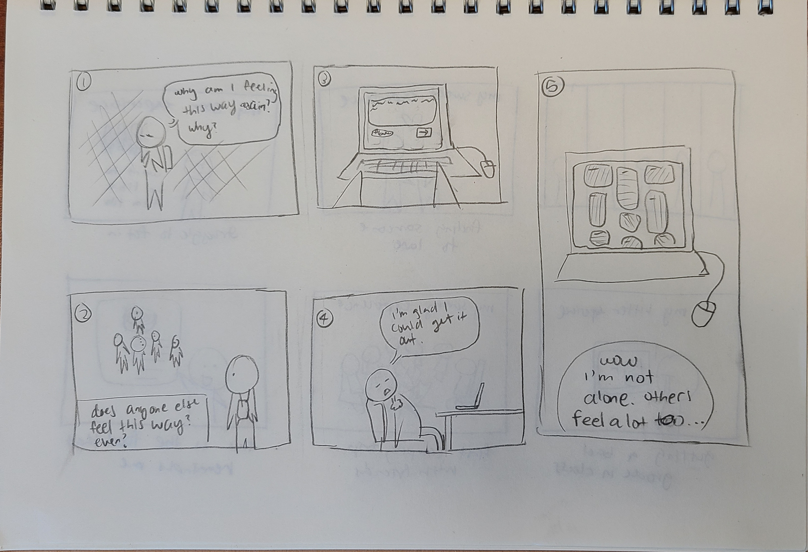

Case Study: Flavor of Emotion
This is a mental health project on normalizing emotions through a shared collective memory in a website for desktop views.
Brainstorming
The idea of this project came about during the class brainstorming session for this project when someone put out the idea of cultural foods. I conducted my individual brainstorming through a mindmap drawing afterwards focusing on culture because I wanted to explore other possibilities within the same umbrella topic. I found myself gravitativiating towards food as conversation. With the culture and food in mind, I thought back to my own culture and made the connection to the 5 senses of taste that dominate the flavors of food in Chinese culture.

Goals
- Provide an outlet for people to express emotions through 5 senses of taste in a quick and short way
- Provide a space for shared empathy where people can feel validated through seeing others experiences
- Have the audience come out understanding that emotions are something everyone shares but we all also have different perspectives on what it means to feel a certain way
Research and Development
I defined my target audience through comic storyboarding to explore the scenarios of potential users and their motivations to use this project. With the goal of being an emotional outlet, scenario 1 stood out to me as aligned more with the goals of my project and how I would want the audience to feel.


Comparative Analysis
Comparative analysis was used to explore how other webpages are organizing large amounts of data within a webpage. I found the best monchy & best memory that had an interesting interpretation of the scrolling interface and found Frontline which had a more free flowing draggable display. I decided to do the scrolling for feasibility and the possibility of a growing database of inputs. A draggable format may limit how far the display dragged and be confusing in navigation for users to look through responses.
read about comparative analysis
Moodboard
Since I was looking into my ethnic culture for the backstory on this project, I used Pinterest to find modern takes on Chinese or Asian related graphics. I was looking at posters that had graphic elements along with text and exploring how I can make typographic choices for the site. The moodboard ended as one of the most impactful researches that contributed to my visual designs, especially for the graphic buttons.
Wireflows
Wireflow was my first interpretation of how I planned for the page to flow based on my learnings in comparative analysis, with navigation on the left and keeping the right as a display. The navigation bar is a boxed area that would open and collapse to hold pages and the main display of responses would be displayed in the background. That way, the users would be able to either fully focus on functionalities of the project or just read responses from others who have contributed. The responses in the right display would be individually displayed in their own shape container.
Visual Development
Visual mockups were the start of transferring wireflows and graphic idea in my mind to lines and color on Figma. The deep red is a very classic color in Chinese culture so I wanted to include it as part of the palette and it became the border for containers that hold responses. I came up with the color swatches on the thought of flavors and swatches of sauces on a restaurant dish. Each of the colors represent one of the flavors which I will utilize later in my web iterations. Spatially, the swatches would separate responses and add visual interest but not be overwhelming to the audience.
Web Development
version 1
This was a rough HTML skeleton that I wanted to get the input form working first since it was going to be the main task of my project.
version 2
From the basic HTML skeleton, I connected the form to a Back4App database so that inputs are stored and displayed back to the left of the screen. I started to stylize my page starting by following visual mockups and drafting up the graphic components in Adobe Illustrator for the buttons.
usability testing
I had 3 peers who knew nothing of my project as participants in a usability test to test the user flow and intuitiveness for my usability test. In order for this, my project took shape in terms of all the functions and the final user flow came out with the opening page, graphic elements, and display.
Confusing Input form
The input for adding a card was vague to some of the participants. One thought out loud saying “wait, I don’t know what emotions to put here. Is it about a topic or just how I feel right now?”.
Lack of Cohesion Between Pages
All the current pages of the site lack cohesion because of sudden change in style and color. Some parts are modern while others look traditional. The idea of these two styles could work together but it’s not working together on this project yet.
An Informative Opening Page
I made sure to ask about this because I knew that my project may not be understandable without some information and all participants seem to have gotten out of it that the project is something about emotion. However, one did mention that I should also include stories of the origin.
Successful Display of Others’ Entries
All 3 of my participants enjoyed reading others' notes and even found them relatable which matches exactly with how I expected a user would feel as I imagined it from early development storyboarding.
I set a couple goals based on my usability test results. The quarter was coming to an end so I also had to keep in mind the feasibility so I decided not to add further functionality but instead work some sticky points and visuals.
- Provide an outlet for people to express emotions through 5 senses of taste in a quick and short way
- Provide a space for shared empathy where people can feel validated through seeing others experiences
- Have the audience come out understanding that emotions are something everyone shares but we all also have different perspectives on what it means to feel a certain way
Conclusion
In completing this project, I learned a lot more about the design process than I had already know. I learn the many ways that research and development can take form as well as the importance of usability testing because every part I did ended up adding something to the final project. I learned that making versions and iterations could be one way to slowly move towards a goal and it worked out very well for me in this project, especially usability testing before the final iteration.
The most challenging part was developing storytelling through words and visuals. My project did as people share emotion which may be personal so I wanted my audience to feel comfortable and be able to feel the background idea that inspired this project. I also had a lot of ideas in my head that I wasn’t able to fully convey for this project but it all came out together by the end of the final version which I find the most rewarding and proudest part.